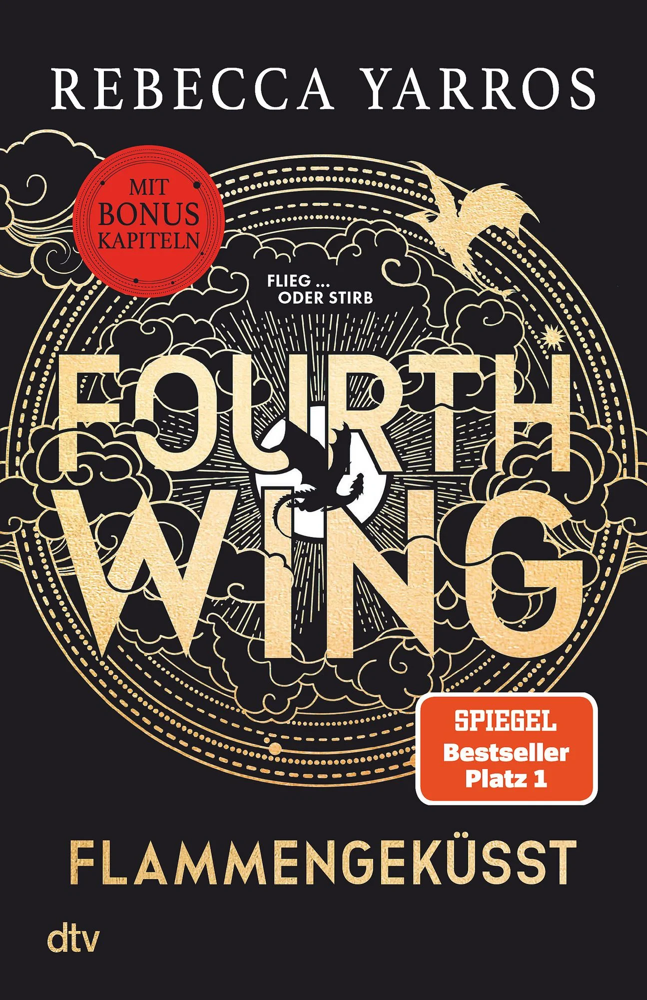
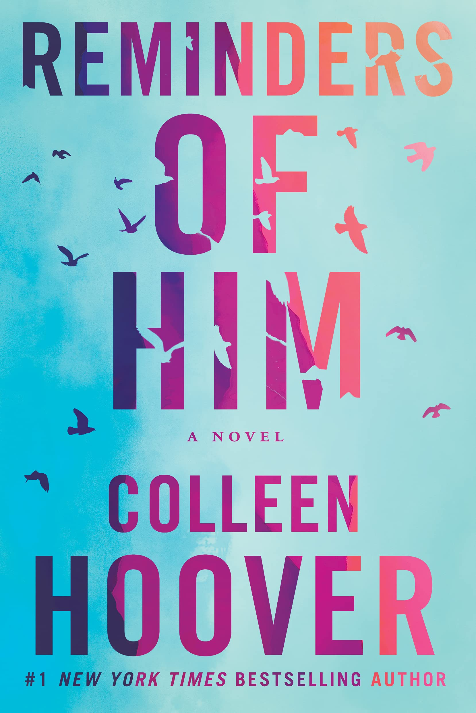

About Me
Kreativität war bei mir nie ein Hobby, sondern immer ein natürlicher Teil meines Alltags. Mit 11 habe ich angefangen, Videos zu schneiden, mit 12 meinen ersten Sprüche-Account aufgebaut und damit 5k Follower erreicht. Nicht perfekt, aber früh mit viel Neugier, Ausprobieren und dem Drang, Dinge visuell auf den Punkt zu bringen.
Gleichzeitig fasziniert mich seit Jahren die menschliche Psyche: warum wir handeln, wie wir handeln, und wie stark Muster, Erfahrungen und Umfeld unser Denken prägen. Genau deshalb liebe ich Bücher, vor allem Psychothriller, und auch True Crime aus derselben Perspektive: nicht wegen des Schocks, sondern wegen der Motive dahinter. Mich interessiert, was unter der Oberfläche passiert.
Von dort war der Schritt zu Psychologie, Neurologie und Neuroplastizität fast logisch. Ich mag Themen, die Tiefe haben, und ich arbeite am liebsten dort, wo Strategie, Kreativität und echtes Verständnis für Menschen zusammenkommen.
Personality Type
ENTJ-A — The Commander
Strategisch, entschlossen, effizient. Ich sehe Strukturen, wo andere Chaos sehen. Mein Antrieb ist Fortschritt und Perfektion.
Zodiac Sign
Cancer — The Intuitive
Tiefgründig, intuitiv, beschützend. Ich fühle die Stimmung eines Raumes (oder einer Brand) sofort. Das emotionale Gegengewicht zu meiner Strategie.
MBTI Persönlichkeit
INTP‑A- 51% Introvertiert
- 95% Intuitiv
- 74% Analytisch
- 100% Kreativ
Der Logiker
Neugierig. Unabhängig. Analytisch. INTPs analysieren komplexe Systeme und finden kreative Lösungen—Pioniere neuer Ideen.
Charaktereigenschaften
- Analytisch und logisch denkend
- Neugierig und an tiefem Verständnis interessiert
- Unabhängig und eigenständig in ihren Ideen
- Manchmal abwesend oder unpraktisch im Alltag
- Können mit sozialen Konventionen Schwierigkeiten haben
- Lieben intellektuelle Herausforderungen und Problemlösen
Like minds
Albert Einstein · Nikola Tesla · Marie Curie
Technical Skills
-
Adobe InDesign 95%
-
Photoshop 98%
-
Premiere Pro 92%
-
After Effects 90%
-
Frontend (HTML, CSS, JS) 85%
-
Backend (NodeJS, PHP) 75%
-
Marketing & Social Media 80%
Meine Favoriten
Ein Einblick in die Bücher, die mich besonders geprägt haben – vor allem Psychothriller, True Crime und Geschichten mit psychologischer Tiefe.
-

- Violet Sorrengail sollte ein ruhiges Leben unter Büchern führen – doch auf Befehl ihrer Mutter wird sie ans Basgiath War College geschickt, wo Drachenreiter ausgebildet werden.
- Zwischen brutalen Prüfungen, tödlicher Konkurrenz und politischen Intrigen muss sie beweisen, dass Intelligenz ebenso mächtig sein kann wie rohe Stärke.
- Es geht um Macht, Loyalität – und die Frage, wem man in einem System trauen kann, das auf Kontrolle aufgebaut ist.
-
- Fünf Jahre nach einem vermeintlich gelösten Mordfall beschliesst Pip Fitz-Amobi, die Geschichte für ihr Abschlussprojekt neu aufzurollen.
- Je tiefer Pip recherchiert, desto mehr Widersprüche entdeckt sie – nicht jeder will, dass die Vergangenheit erneut aufgedeckt wird.
- Was als Schulprojekt beginnt, entwickelt sich zu einer gefährlichen Suche nach Wahrheit.
-

- Nach fünf Jahren im Gefängnis kehrt Kenna Rowan in eine Stadt zurück, die ihr nie verziehen hat.
- Gefühle entstehen dort, wo sie eigentlich keinen Platz haben dürften.
- Die Geschichte handelt von Schuld und der Frage, ob ein einziger Fehler ein ganzes Leben definieren darf.
Tops, Flops &
alles dazwischen.
Alle 104 Bücher — unzensiert bewertet.
Klänge, die prägen.
Drei Alben, die 2025 auf Repeat liefen – jedes davon ein eigenes Universum.